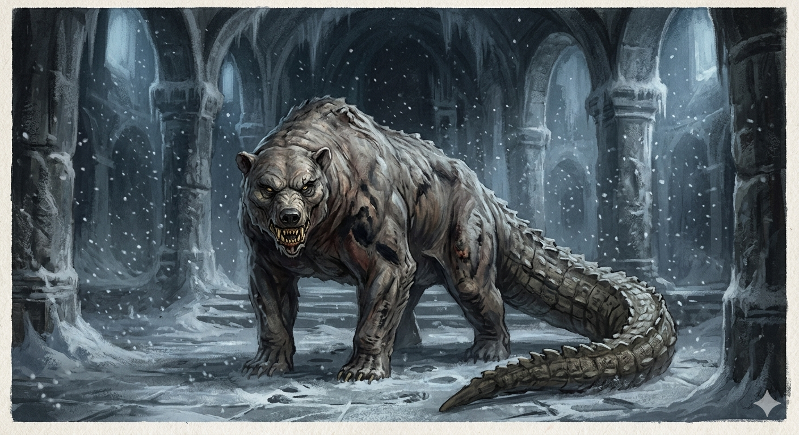

新たなるボス『アラサラウス』が異邦神の園に登場！
また、同日に一部試練の羽ペン・装具の調整を行います。
公開日程
2026年05月10日 5:00~
アラサラウスとは？
アイヌ民族の伝承に登場する妖怪。アラサルシとも呼ばれる。
体毛が全くない熊のような動物で、自在に変身し人間を捕食するとされる。
必要アイテム
『アラサラウス』は神秘の書見台で「アラサラウスの羽ペン」を使用することで、
異邦神の園のボスモンスターとして出現します。
「アラサラウスの羽ペン」は、「万華鏡」の1級景品として入手できます。
※「アラサラウスの羽ペン」実装と同時に、「万華鏡」にて入手できる「天狗の羽ペン」は2級、「赫奕姫の羽ペン」は3級へ等級が変更されます。
現3級景品の「ネメアの獅子の羽ペン」は万華鏡の景品から外れ、ヴァナの町にいる「工芸家グリムニル」から購入可能となります。
討伐報酬
「試練の羽ペン」の調整
・「工芸家グリムニル」に追加される試練の羽ペン
| 試練の羽ペン | 価格 |
|---|---|
| ネメアの獅子の羽ペン | 100000G |
| 試練の羽ペン | 変更前 | 変更後 |
|---|---|---|
| ヒュドラのの羽ペン | 100000G | 50000G |
| 土蜘蛛の羽ペン | 50000G | 25000G |